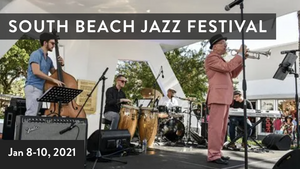

History of Miami Beach

Miami Beach land was first purchased by the father and son Henry and Charles Lum in 1870. They bought the land for 75 cents an acre. In 1876 the first building was constructed on the island by an executive order issued by President Ulysses S. Grant at approximately what is now 72nd Street. It was called the Biscayne House of Refuge and it was intended to provide food, water, and shelter for those who had been shipwrecked. Many tried growing crops such as coconuts and avacados, to different degrees of success. The city of Miami was established in 1896 when the railrood was constructed there. The shipping Channel of Government Cut was made in 1905 which also developed the area. Various investors saw opportunity to develop Miami Beach as a resort location and in 1915 the first hotel, Brown's Hotel, was built. This hotel is still standing at 122 Ocean Drive. It was expensive to make the land on the Beach suitable for constructing buildings, but by 1913 the first bridge, Collins Bridge, from Miami to Miami Beach was opened. The bridge cost $150,000 to construct and was later replaced by the now standing Venetian Causway. In 1915 the Town of Miami Beach was chartered and became a full blown city in 1917. The first skyscraper was the Lord Tarleton Hotel built in 1940. After World War II, there was an influx of immigrants to South Florida which caused the population in Miami Beach to increase. In 1959 after Fidel Castro rose to power, a wave of Cuban refugees came to South Florida and significantly changed the demographics of the area. In the 1990s, South Beach became a mecca of the fashion industry and celebrities. South Beach is also know for its art deco style buildings.
Fun Business Facts
92,334
TOTAL POPULATION
40
MEDIAN AGE
7,033
WOMEN-OWNED BUSINESSES
10,115
MINORITY-OWNED BUINSESSES
8,723
NONMINORITY-OWNED BUISNESSES
1,038
VETERAN-OWNED BUSINESSES
City Events
South Beach Jazz Festival
Jan 8-10, 2021
Music lovers, this is your chance to kick back, relax and listen to the smooth sounds of jazz in always bustling South Beach. The 4th Annual South Beach Jazz Festival takes place on January 3 - 5, 2020, with 14 performances featuring everything from traditional, contemporary, Latin and New Orleans style jazz. This festival is more than just music that moves you; it also puts a very important spotlight on world-renowned musicians who have disabilities. The founder, David New, suffered a rare disease that left him paralyzed, blind and deaf, and now he works tirelessly to break down barriers and to educate people about living and working with people with disabilities. The best part of this Miami Beach event — most of the Jazz Festival performances are free to the public and are sprinkled throughout South Beach. Head to Lummus Park, which is situated on the ocean and famous Ocean Drive, on January 4 for “Jazz in Motion on Ocean” with top musicians like Yainer Horta, Magela Herrera, Alfredo Chacon and Ruben Caban; Grammy-award winning drummer Jonathan Joseph will host a master class at Miami Beach Community Church; and Latin pianist Kiki Sanchez will lead a jazz ensemble at Capital One Cafe. Expect performers like percussionist Sammy Figueroa, pianist Fanni Sarkozy, jazz vocalist Ashley Pezzotti and William Cepeda at the Euclid Circle stage on January 5. You can also listen to the sounds of Nicole Yarling at 1111 Lincoln Road and on the same night, catch the popular flick “Ray,” a drama about the genius of blind, pop/jazz singer, Ray Charles, on the big screen at Soundscape Park at the New World Center.
Art Deco Weekend
Jan: 14-16
Art Deco Weekend brings people together for three days of fun, history, design and architecture Today’s Miami is a haven for all kinds of art and artists, but historically, it’s most known for Art Deco. Launched in 1976 by the nonprofit organization Miami Design Preservation League (MDPL), Art Deco Weekend is a three-day celebration of that movement — a weekend filled with art, architecture, history, culture, entertainment and more. Originally created as a way to bring more people to Miami Beach at a time when tourism was low and preserving Art Deco history wasn’t a priority, today, this popular annual event is still the longest-running free community cultural festival in Miami Beach. Returning to our South Beach shores on January 15th, 2021, this year’s festival will be virtual for the first time.